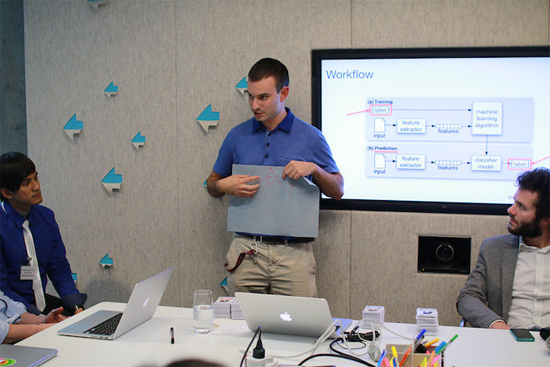

Last year the ODI launched a new course, ‘Open Data Science’, as part of the European Data Science Academy project. ODI Trainer and Data Scientist Dr Dave Tarrant shares why data science skills are crucial in the modern world
 Dave Tarrant running a session at the ODI Training Discovery Day, held at Arup, 2015. CC BY 2.0, uploaded by [The ODI](https://www.flickr.com/photos/ukodi/22814183982/in/album-72157660870946662/ “The ODI").
Hi Dave. What exactly is data science?
Hi. Good question. A data scientist is essentially someone who has a unique mix of strategic and practical skills, spanning maths and statistical knowledge, machine-learning, domain expertise, data and advanced computing, visualisation and scientific method.
That’s quite the combination. Do you think that is why the Harvard Business Review named data science the ‘sexiest job of the 21st-century’?
Absolutely, and because it is a very sought-after role. But it’s a difficult skillset to find in just one person. So much so that the European Data Science Academy is identifying data science skills gaps across Europe and creating learning resources and content to address rising demand for data scientists.
Where did these skills gaps came from? Why is there a rapidly growing demand for data scientists?
I think it is because data is becoming such a key part of everything we do. We handle massive amounts of data in our personal and working lives, so data skills are important to have. Some people still shy away from technology and say we don’t need it. But when it comes to operating in 21st-century business environments, you must be able to work and communicate in online, tech-enabled spaces. Data skills are becoming more crucial to organisations doing so effectively.
Do you think that having data skills is important now even for those with non-technical roles?
Yes, everyone. For the same reason that a geeky technologist in a basement would try to understand business models. In the modern world, you need a combination of communication, strategic and technical skills in order to be successful. If you’ve only got one, you won't have the combination that keeps you relevant within industry.
So what is ‘open data science’, and why do we need it?
A key aspect of data science is all about culture – about innovating openly and in a team environment. Individual organisations or people are unlikely to be able to solve one huge problem, no matter how skilled they are. You’re going to need to collaborate.
A good example of applied open data science is OpenSensors’ ‘Breathe Heathrow’ project. This project showed how peer-to-peer collaboration – using data-driven open data methodologies – can affect commercial decision-making in the real world, as well as having a huge impact on people’s lives. It’s the sweet spot between data science and open culture that’s really important to innovation in companies at the moment, as well as transparency in governments and communities.
Why should people come to the ODI to learn about open data science?
Our Open Data Science course provides you with a solid foundation in the subject. Along with boosting your practical skills, we give you a broad understanding of the potential impacts and real-world applications data science can have across different sectors, with a focus on collaborative, community-focused environments.
To book a place on ‘Open Data Science’ today, visit the ODI Courses page. Find out how you can help train the next generation of data scientists by joining the European Data Science Academy project. The European Data Science Academy project has received funding from the European Union's Horizon 2020 research and innovation programme under grant agreement No 643937